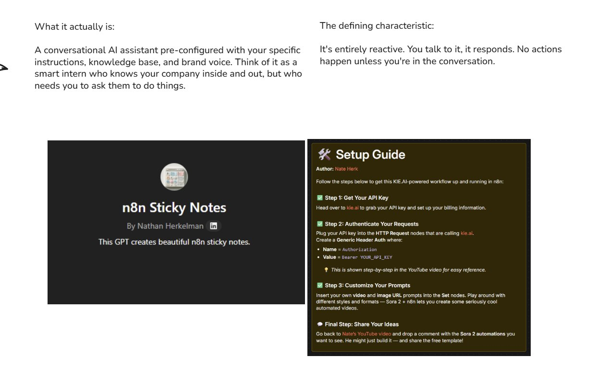

Custom GPTs, Projetos e Gems
A base da piramide: assistentes conversacionais personalizados

Custom GPT: Um assistente que conhece sua empresa e responde quando voce pergunta
O Que Sao?
Assistentes conversacionais pre-configurados
Custom GPTs, Claude Projects e Gemini Gems sao assistentes de IA personalizados que voce configura com instrucoes especificas, base de conhecimento e tom de voz. Pense neles como um "estagiario inteligente" que conhece sua empresa por dentro e por fora.
A caracteristica definidora:
"E totalmente reativo. Voce fala com ele, ele responde. Nenhuma acao acontece a menos que voce esteja na conversa."
Componentes de um Custom GPT
Os elementos que voce configura
Instrucoes Especificas
Defina como o assistente deve se comportar, responder e interagir. Inclua regras, restricoes e preferencias.
Base de Conhecimento
Adicione documentos, PDFs, planilhas e outros arquivos que o assistente deve consultar para dar respostas precisas.
Tom e Voz
Configure a personalidade: formal ou informal, tecnico ou simples, serio ou descontraido.
Acoes (Opcional)
Conecte APIs externas para que o GPT possa buscar dados em tempo real ou executar acoes simples.
Plataformas Disponiveis
Onde voce pode criar assistentes personalizados
OpenAI - Custom GPTs
- • GPT Store para publicar
- • Acoes com APIs externas
- • Code Interpreter
- • DALL-E para imagens
Anthropic - Projects
- • Claude como base
- • Contexto mais longo
- • Melhor para analise
- • Artifacts interativos
Google - Gems
- • Gemini como base
- • Integracao Google
- • Acesso a web
- • Multimodal nativo
Quando Usar Custom GPTs
Cenarios ideais para esta camada
Tarefas repetitivas com revisao humana
O humano precisa ver e aprovar o resultado antes de usar.
Processos criativos ou iterativos
Brainstorming, escrita, ideacao - onde voce vai e volta ate acertar.
Consultas a base de conhecimento
Perguntas sobre documentos internos, manuais, processos.
Prototipagem rapida
Testar uma ideia antes de construir algo mais complexo.
Quando NAO Usar
Sinais de que voce precisa subir na piramide
Processos que devem rodar automaticamente
Se ninguem precisa estar presente, use automacao ou workflow.
Tarefas que precisam de acoes em sistemas externos
Enviar emails, atualizar banco de dados, disparar webhooks.
Fluxos com multiplas etapas sequenciais
Se ha uma sequencia clara de passos, considere um workflow.
Exemplo Pratico
Um caso real de uso
Caso: Gerador de Guias de Setup para YouTube
Um Custom GPT configurado para gerar guias de configuracao para videos do YouTube. O criador de conteudo conversa com o GPT, fornece detalhes do video, e recebe um guia formatado.
Por que funciona aqui:
- • Processo criativo/iterativo
- • Humano revisa antes de publicar
- • Cada video e diferente
O que o GPT faz:
- • Conhece o formato padrao
- • Adapta ao conteudo especifico
- • Permite ajustes rapidos
Resultado: O criador economiza tempo, mantem consistencia, e ainda tem controle total sobre o resultado final.
Dicas de Configuracao
Como criar um Custom GPT eficiente
Seja especifico nas instrucoes
Quanto mais detalhado, melhor. Inclua exemplos do que voce quer e do que nao quer.
Organize a base de conhecimento
Documentos bem estruturados geram respostas melhores. Evite PDFs escaneados.
Defina limites claros
O que o GPT NAO deve fazer e tao importante quanto o que deve fazer.
Teste e itere
Nenhum GPT fica perfeito na primeira tentativa. Teste, ajuste, repita.
Resumo do Modulo
Principio-chave
"Custom GPT = Estagiario inteligente que espera voce pedir."